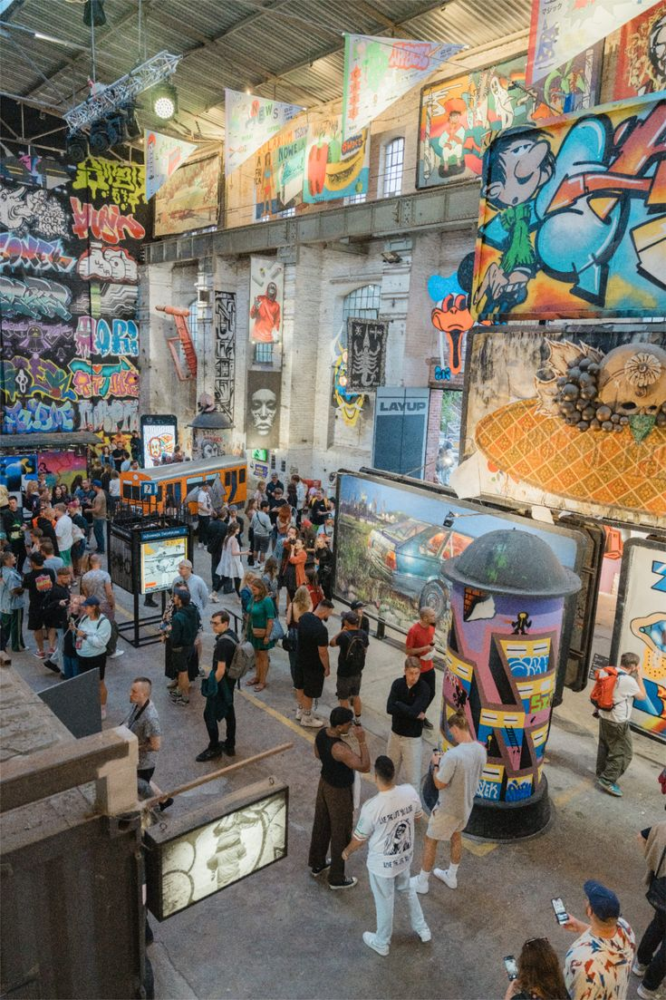
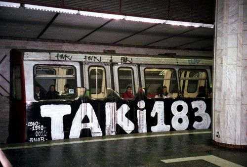

La Historia del Graffiti

*De las cavernas al spray *
¿Cómo nació esto?
Aunque el ser humano lleva rayando muros desde Pompeya o la Segunda Guerra Mundial (como el famoso mensaje "Kilroy was here"), el graffiti moderno tal como lo conocemos nació a finales de los años 60 entre Filadelfia y Nueva York.
La chispa inicial fue la necesidad de hacerse visible. Jóvenes de barrios populares empezaron a dejar su firma o apodo (tag) en las paredes. Uno de los nombres más icónicos fue TAKI 183, un chico de Nueva York que trabajaba como mensajero y firmaba en cuanto vagón de metro o pared encontraba. En 1971, el New York Times le hizo un reportaje, y la juventud de la ciudad dijo: "¡Yo también quiero que lean mi nombre!".
